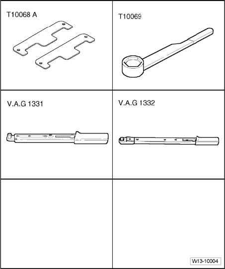
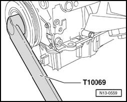
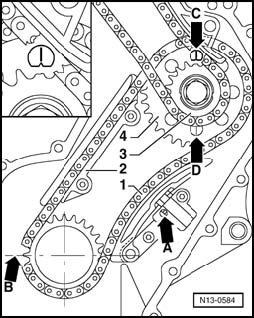
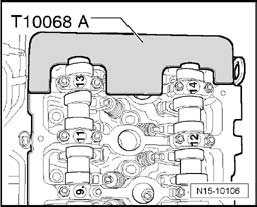
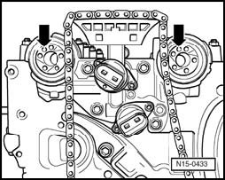
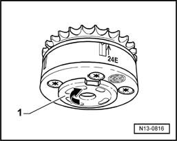
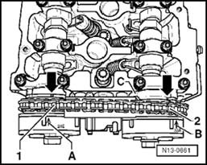
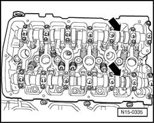
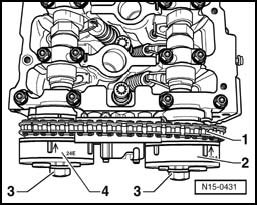

Camshaft, Lifters and Push Rods: Adjustments
Valve timing, adjusting
(Installation of roller chain, work sequence is only possible when engine is removed from engine compartment)

Special tools, testers and auxiliary items required
^ Camshaft bar T10068 A
^ Counter-holder tool T10069
^ Torque wrench (5 to 50 Nm) V.A.G1331
^ Torque wrench (40 to 200 Nm) V.A.G1332
^ Not illustrated:
^ Sealant AMV 174 004 01
^ Sealant AMV 176 501
Work procedure
CAUTION: When doing any repair work, especially in the engine compartment, pay attention to the following due to clearance issues:
^ Route all the various lines (e.g. for fuel, hydraulics, EVAP system, coolant, refrigerant, brake fluid and vacuum lines and hoses) and electrical wiring so that the original positions are restored.
^ Ensure sufficient clearance to all moving or hot components.
Note:
^ The timing chain can only be removed with the engine removed. The following work sequence description begins with the engine disassembled. The adjustments required depend on how far the engine has been disassembled.
Install roller chain and chain tensioner with tensioning plate for intermediate shaft drive:

- Adjust position of crankshaft relative to intermediate shaft. To position: Align ground-down tooth of drive chain sprocket - B - with mounting joint "TDC cyl. 1".
- Install both bolts without collar for guide rail - 2 - and tighten to 10 Nm.
Note:
^ Note direction of rotation of used chains.
- Install guide rail - 2 - with roller chain - 1 - and both chain sprockets - 3 - and - 4 -. Marking on roller chain sprocket - 4 - must align with notch - C - or - D - on thrust washer of intermediate shaft.
During installation make sure that the roller chain runs completely straight in the guide rail from the crankshaft to the intermediate shaft.
- Tighten chain sprockets - 3 - and - 4 - on the intermediate shaft by hand.
Note:
^ Be aware that all chain sprocket securing screws/bolts must be replaced.
- Install chain tensioner on opposite side.
- Release locking splines of chain tensioner - A - with a small screwdriver and tensioning rail pressed against chain tensioner.
- Install chain tensioner in this position and tighten to 8 Nm.

- Lock vibration damper with counter-holder T10069.

- Tighten new securing bolts for intermediate shaft sprockets - 3 - and - 4 - 60 Nm + 1/4. (90°) further
- Remove counter-holder T10069.
- Check position of crankshaft - B - to intermediate shaft - C - or - D - once again.
- Set engine to No. 1 cylinder TDC again. 1.
Install roller chain for camshaft drive:
- Position the camshafts in cylinder head to TDC No. 1 cylinder. 1.

Note:
^ If necessary use 32 mm open end wrench to turn camshafts - arrow - to the correct position. Camshaft bar T10068 A must not be installed during this process.

- The camshaft bar T10068 A must engage in both shaft grooves.
Note:
^ If the cylinder head is removed:
^ Install cylinder head.
- Place camshaft roller chain on intermediate shaft chain sprocket.
- Route chain between tensioning rail and guide rail toward control housing.

- Position both camshaft adjusters (identification: 24E on intake side and 32A on exhaust side) on ends of camshafts as shown - arrows -.
- Install intake camshaft adjuster first.

- Turn the sensor wheel - 1 - in camshaft adjuster to the right - arrow - onto stop and bolt it on in this position. Marking - 24E- must align with notch in control housing.
- Place camshaft roller chain over sprocket in this position.
Note:
^ If the camshaft adjuster is to be fastened to the camshaft, the adjuster with corresponding chain sprocket must be turned to the left. In any case, the marking "24E" or "32A" must be aligned to the notch in the control housing.
- Count exactly 16 rollers of timing chain to right from marking -24E- of camshaft adjuster.
- Insert tooth of exhaust camshaft adjuster with marking -32A- at that point. There must now be exactly 16 rollers between those two teeth. Turn the sensor wheel - 1 - in camshaft adjuster to the right - arrow - onto stop and bolt it to exhaust camshaft in this position.
Note:
^ If the camshaft adjuster is to be fastened to the camshaft, the adjuster with corresponding chain sprocket must be turned to the left. In any case, the marking "24E" or "32A" must be aligned to the notch in the control housing.

- Marks - A - and - B - on camshaft adjusters must align with notches - arrows - on control housing - C -.
- Remove camshaft bar T10068 A.
- Tighten new securing bolts for camshaft adjusters by hand.
- Check this adjustment
- Press tensioner plate of tensioning element against camshaft roller chain.
- Turn over crankshaft twice in direction of engine rotation and check valve timing Valve timing, checking.
Note:
^ When turning the crankshaft, the tensioning plate must be pressed against the camshaft roller chain by hand at the chain tensioner, so that the camshaft roller chain does not jump over a tooth.
If the marks do not align:
- Repeat the valve timing adjustment procedure.
If the marks align:

- Hold the respective fastening camshaft tightly with an open-end wrench 32 mm - arrow -.
Note:
^ Camshaft bar T10068 A must not be installed during this process.-

- Tighten new securing bolts - 3 - for intake and exhaust camshaft adjusters - 4 - and - 2 - to 60 Nm +1/4 turn. (90°) further (additional rotation can occur in several stages).
- Now install sealing flange as follows:
- Coat sealing surface of sealing flange with sealant AMV 176 501 and install.
- To do this, insert assembly tool T10122/2 into oil seal Oil seal (flywheel side), removing and installing.
- Push the seal over the assembly tool T10122/2 onto the crankshaft stub, and the sealing flange further onto the cylinder block.
Note:
^ Consider the dowel pins in the cylinder block.
- Tighten bolts to 8 Nm.
- Remove assembly tool T10122/2 from crankshaft stub.
- Prepare cylinder head gasket for installation.
- Lubricate O-ring for oil channel seal and install with oil seal into cover.
- Install cover, insert all securing bolts with corresponding brackets and tighten lightly.
- First fasten bolts M8 to 23 Nm, then fasten bolts M6 to 8 Nm.
- Install camshaft roller chain tensioner and fasten to 40 Nm.
- Turn over crankshaft twice in direction of engine rotation and check valve timing again.
- Bolt on thermostat housing.
- Install cylinder head cover and intake manifold.